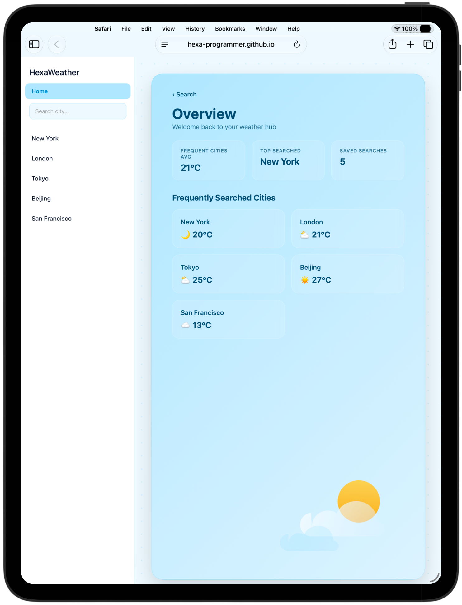

1) City Search
Search for accurate weather information for cities and locations around the world.
HexaWeather is a minimal, weather application built using HTML, CSS, and JavaScript.
It fetches live weather data from the Open-Meteo API and runs entirely in the browser with no backend.

Search for accurate weather information for cities and locations around the world.
Displays current temperature and detailed atmospheric weather conditions effortlessly.
View daily high and low temperatures for the coming week in a clean, minimal interface.
Stores recently searched cities locally using localStorage for immediate, quick access.
Automatically switches between day and night themes based on local time environments.
When a city is searched, the application communicates with external endpoints:
1) Geocoding API converts city to coordinates
2) Forecast API retrieves local weather dataRecent searches are stored locally using:
localStorageThis allows quick access to previously searched cities without any backend database.
To run HexaWeather locally:
git clone https://github.com/Hexa-Programmer/HexaWeather.git
cd HexaWeather
open index.htmlThis is a personal learning project and will continue to evolve over time.